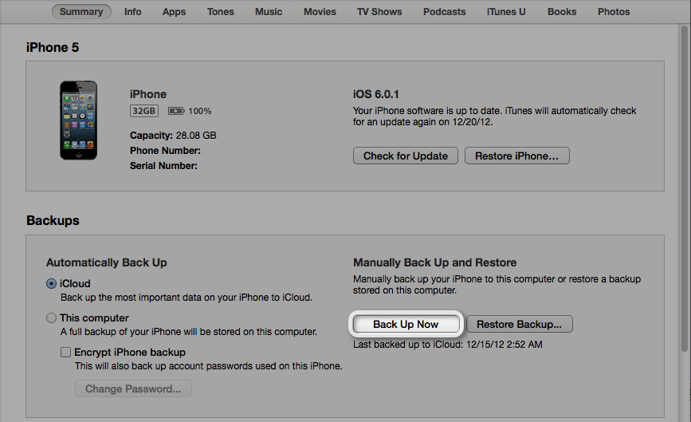

The basics of Apple products from an Advisor's persective
Updating thru Wi-Fi
Updating is easily performed wirelessly but not really recommended if your network is prone to interruption of service.
- Tap Settings > General > Software Update and follow the on screen instructions.
Connecting to a computer and using iTunes to update your iPhone provides a better connection to the server at Apple.
- Sync with iTunes (disabled if you have iCloud backup turned on)
- Right-click (or Control-click) the iOS device in iTunes under Devices and choose Back Up
To manually back up your device using iTunes:
- Connect your device to a computer with the latest version of iTunes installed.
- Click the File menu and select Devices > Back up.
Updating with computer
- Connect your device to a computer with the latest version of iTunes installed.
- Open the device's Summary tab. There are two ways to access this:
- Click the device button in the upper right corner. (If viewing the iTunes Store, click the Library button in the upper right corner. The device button will then be visible.)
- From any view in iTunes, click the View menu and select Show Sidebar. Select your iOS device in iTunes under Devices.
- Click the Back Up Now button. 
Restoring
Restoring is the last step that Apple uses to determine if the issue is software or hardware.
- Connect your device to your computer.
- Select your iPhone, iPad, or iPod touch when it appears in iTunes. Select the Summary tab, and click the Restore button.
iTunes will ask if you are sure you want to perform this task. This step can be 10 to 20 minutes and when it is done, your device will restart.